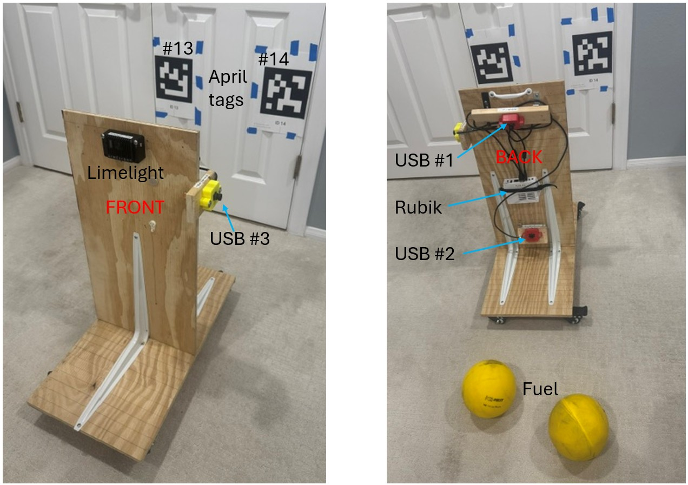
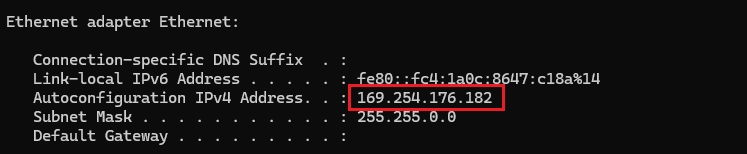
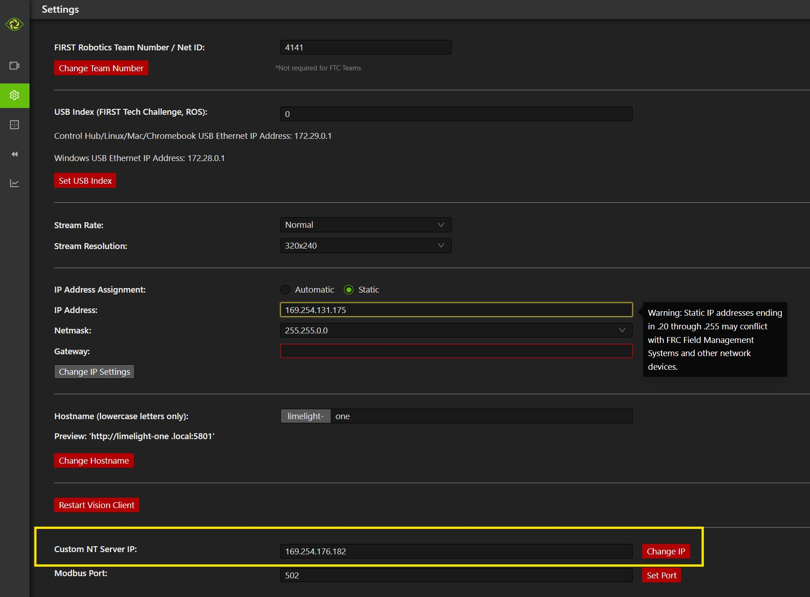
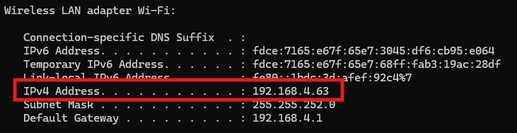
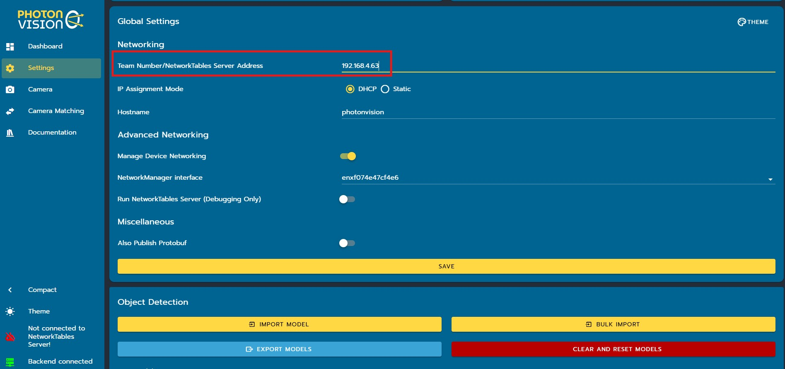

Setting Up Vision Hardware-in-the-Loop¶
This section describes the test board on which the vision devices are installed as well as the software settings required to simulate with AdvantageScope and hardware in the loop.
Test Board and Targets¶
The test board consists of several vision devices (Limelight and Rubik cameras) installed on a wooden test board which is mounted vertically on a wheeled platform. In a sense, this unit serves as a robot mockup with vision sensors positioned as if on a real robot but without any drive train or other mechanisms. In addition, apriltags and game pieces are needed as targets for the vision sensors.
Below are a couple of pictures of such a test board.

This unit consists of four vision sensors:
- A Limelight 4 (front, pointing horizontal)
- USB camera #1 (back, pointing down)
- USB camera #2 (back, pointing up)
- USB camera #3 (left, pointing horizontal)
USB camera #1 is for detecting objects on the floor; the other three sensors are for detecting apriltags.
The three USB cameras are attached to the Rubik Pi 3 on the back.
Two apriltags (13 and 14) are positioned on the wall at the same height and relative positions as on the 2026 playing field where they appear under the outpost.
Yellow balls ("fuel" 2026 game pieces) are used for object detection.
MonarchVision Settings¶
Turn on simulation mode in Constants.java:
public static final Mode simMode = Mode.SIM;
Settings for Field Vision¶
If you are using some of the vision devices to detect apriltags for determining the placement of the robot on the virtual field, edit the Java code as follows:
-
Turn on hardware-in-the-loop mode for apriltag detection in
FieldVisionConstants.java:/** Are we running a physics simulator, but with a real camera connected. */ public static boolean hardwareInTheLoop = true; -
If necessary, change
hardwareInTheLoopCamerasinFieldVisionConstants.javawhich defines what cameras are on the test board to be used for detecting apriltags. EachCameraSpecspecifies the type of camera, its name, and its position and orientation relative to the center of the robot.// The following is a definition of all cameras on a test harness used to testing // vision hardware-in-the-loop in simulation mode. public static CameraSpec[] hardwareInLoopCameras = { new CameraSpec( VisionType.LIMELIGHT, "limelight-one", new Transform3d( Constants.robotLengthInMeters / 2.0, 0.0, Units.inchesToMeters(26.), new Rotation3d(0.0, 0.0, 0.0))), new CameraSpec( VisionType.PHOTONVISION, "rubik_camera2", new Transform3d( -Constants.robotLengthInMeters / 2.0, 0.0, Units.inchesToMeters(7), new Rotation3d( 0.0, -Math.toRadians(26), // Negative points up!!! See above. Math.PI))), new CameraSpec( VisionType.PHOTONVISION, "rubik_camera3", new Transform3d( 0.0, Constants.robotWidthInMeters / 2.0, Units.inchesToMeters(22), new Rotation3d(0.0, 0.0, Math.PI / 2))) };
Settings for Object Detection¶
If you are using some of the vision devices to detect objects, edit the Java code as follows:
-
Turn on hardware-in-the-loop for object detection in
ObjectVisionConstants.java:/** Are we running a physics simulator, but with a real camera connected. */ public static boolean hardwareInTheLoop = true; -
If necessary, change
hardwareInTheLoopCamerasinObjectVisionConstants.javawhich defines what cameras are on the test board to be used for detecting objects. EachCameraSpecspecifies the type of camera, its name, and its position and orientation relative to the center of the robot.
// The following is a definition of all cameras on a test harness used to test
// vision hardware-in-the-loop object detection
public static CameraSpec[] hardwareInLoopCameras = {
new CameraSpec(
VisionType.PHOTONVISION,
"rubik_camera1",
new Transform3d(
-Constants.robotLengthInMeters / 2.0, // On back of robot
0.0,
Units.inchesToMeters(20.5),
new Rotation3d(
0.0,
Math.toRadians(35.), // Positive points down!!! See above.
Math.PI))), // Facing backwards
new CameraSpec(
VisionType.LIMELIGHT,
"limelight-one",
new Transform3d(
Constants.robotLengthInMeters / 2.0, // On front of robot
0.0,
Units.inchesToMeters(26),
new Rotation3d(
0.0,
Math.toRadians(36.), // Positive points down!!! See above.
0.))) // Facing forward
};
Limelight Settings¶
If you have Limelight devices on the test board, do the following.
- Find the Ethernet address of your laptop by running
ipconfigin a Powershell. (Do not use the wireless ip address.)
- Enter that address (
169.254.176.182) as the custom Network Tables server address at the bottom of the Settings tab of the Limelight web client. This ensures that Limelight sends its results to the NetworkTable server so they can be read by the robot program and displayed in AdvantageScope.
- If necessary, turn off your firewall.
For Apriltag detection: make sure that
Full 3D Targetingis turned on in the Advanced tab of the Limelight web interface.For Object detection: make sure that: a)
Detector Runtimeis set toHailo; b) HEF and label files have been uploaded
PhotonVision Settings¶
If you have a Rubik Pi 3 running PhotonVision on the test board, do the following.
- Plug a dedicated USB power-only cable into the top of the Rubik. (Do not use power from a USB port on your laptop.)
- Find the WIFI address of your laptop by running
ipconfigin a Powershell. (Do not use Ethernet ip address.)
- Enter that address (
192.168.4.63) as theTeam Number/NetworkTables Server Addressin the Settings tab of the PhotonVision dashboard. This ensures that PhotonVision sends its results to the NetworkTable server so they can be read by the robot program and displayed in AdvantageScope. Click theSavebutton after entering the address.